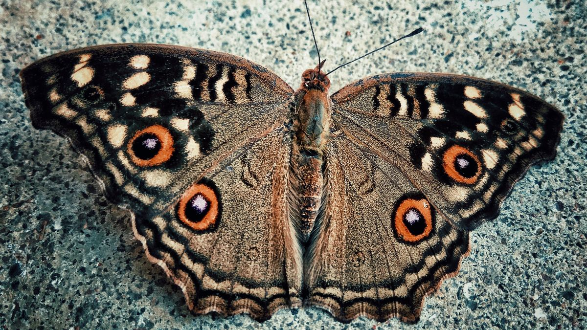
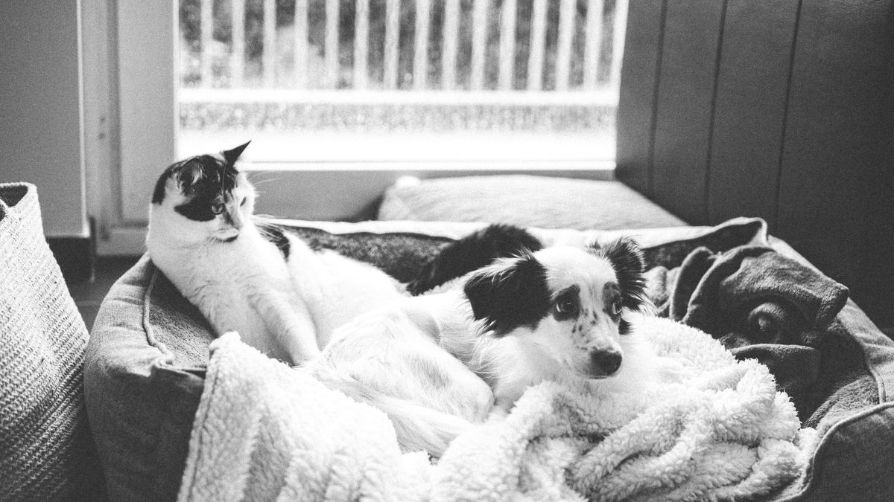
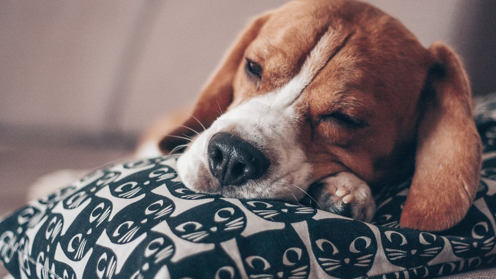
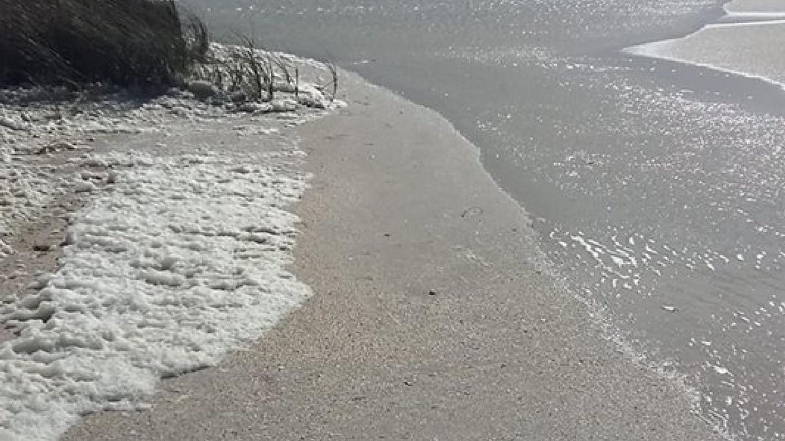
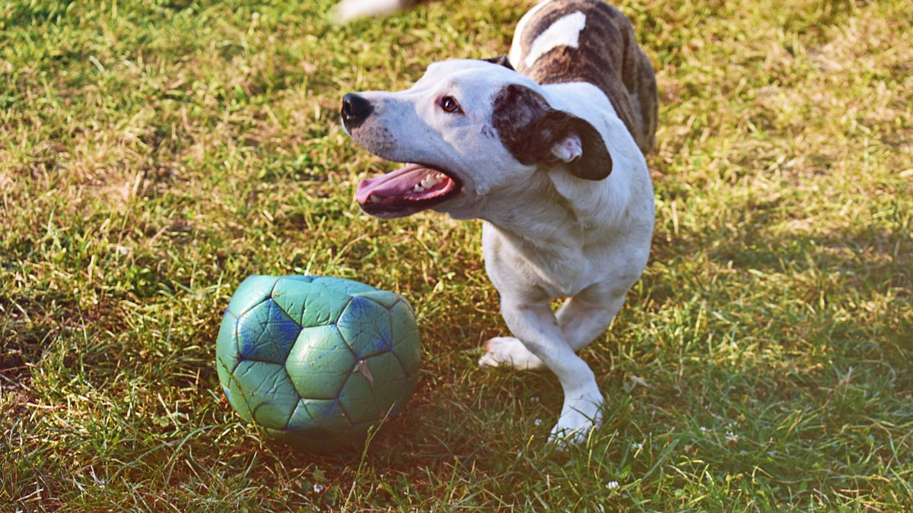

목욕을 미루다 발 냄새만 심해짐
산책 후 진흙이 묻었다고 매번 욕조에 넣으려다, 개가 도망치고 보호자도 지쳐 포기한 집이 있었습니다. 일주일 뒤 발가락 사이 냄새가 심해졌고, '그래도 목욕을 해야 하나'만 반복했습니다. 메모를 보면 전신 목욕은 0회였지만, 발·배 닦기도 빠진 날이 많았습니다.
이 글은 전신 목욕 vs 부분 세척을 나누는 기준을 다룹니다. 빗질·발톱·귀 기본은 기본 그루밍 글, 산책 후 발은 산책 후 발 관리 글, 장마·습기는 장마철 위생 글을 함께 보세요.
왜 매일 전신 목욕이 답이 아닐 때가 많을까
개·고양이 피부는 사람보다 pH·유분막이 다릅니다. 잦은 전신 목욕은 건조·가려움·냄새 재발을 키울 수 있고, 목욕 자체가 스트레스면 다음 관리(발 닦기·빗질)까지 거부로 이어지기 쉽습니다.

입문 단계에서 필요한 것은 '자주 목욕'이 아니라 더러워진 부위를 빨리 닦고 말리는 습관인 경우가 많습니다. 발·배·엉덩이·귀 바깥처럼 냄새·습기가 모이는 곳만 짧게 관리해도 실내 오염·피부 자극을 줄일 수 있습니다.
부분 세척 vs 전신 목욕, 나누는 기준
부분 세척(5~10분)으로 충분한 경우가 많습니다.
- 산책 후 발·다리에 진흙·먼지
- 비·이슬에 배·가슴 털만 젖음
- 엉덩이 주변 분비물·냄새(대소변 후)
- 식사 후 턱·수염에 습식·간식 찌꺼기
전신 목욕을 검토할 때(미용실·집 목욕 모두 해당, 빈도는 개체별로 다름):
- 피부·털에 기름기·냄새가 3일 이상 지속
- 진흙·오물이 전신에 넓게 묻음
- 피부·털 타입에 맞는 4~8주 주기 미용·목욕 일정
- 수의사·미용사가 위생 목적으로 권한 경우
피부 질환·상처·약 목욕은 이 글 범위를 벗어날 수 있습니다. 지시가 있으면 그에 따르세요.
7분 부분 세척 순서
욕조 대신 현관·욕실 한 구석에서 끝내는 순서입니다. 미지근한 물(손등으로 확인)을 기본으로 합니다.

- 1분: 발가락 사이·패드·발톱 주변(진흙·염도·모래 제거)
- 2분: 배·가슴·다리 안쪽 젖은 털(문지르지 말고 수건으로 눌러 흡수 후 닦기)
- 1분: 엉덩이·꼬리 뿌리(분비물·냄새 확인)
- 1분: 귀 바깥·턱·수염(겉면만, 귀 속은 깊이 넣지 않음)
- 2분: 통풍 좋은 곳에서 완전 건조(수건 두드리기→필요 시 약풍 드라이어)
고양이는 억지 전신 목욕보다 부분 닦기가 현실적인 경우가 많습니다. 거부가 심하면 발·엉덩이만 2분으로 줄이고, 다음 날 다시 시도하세요.
물·수건·샴푸, 어디까지 쓸까
물+수건만으로 충분한 날이 많습니다. 샴푸는 전신 목욕 때나, 수의사·제품 안내에 따라 부위 한정으로만 씁니다.

- 사람 샴푸·비누: 피부 pH가 달라 임의 사용은 피하는 편이 안전합니다
- 물티슈: 알코올·향 강한 제품은 피부 자극 가능, 물 적신 수건이 대안
- 귀 세정액: 겉 귀만, 면봉 깊이 삽입 금지
- 향 강한 탈취 스프레이: 15분 후 재오염되기 쉬워 부분 세척+건조가 우선
샴푸를 썼다면 헹굼·건조가 더 중요합니다. 잔여물이 남으면 가려움이 이어질 수 있습니다.
닦은 뒤 건조, 반쪽이면 실패
부분 세척의 대부분은 젖은 채로 두는 시간에서 망가집니다. 닦기와 건조를 한 세트로 묶으세요.

수건은 문지르기보다 두드려 흡수 후 통풍 좋은 곳에서 3~5분 대기합니다. 드라이어는 약풍·30cm 이상·손등 온도 확인 후, 발·겨드랑이처럼 오래 젖는 부위에만 짧게 씁니다.
장마·더운 날 실내 습도가 높으면 건조가 느려집니다. 환기·습도 관리와 함께 보면 냄새 재발이 줄어드는 경우가 많습니다. 젖은 털 상태로 빗질·에어컨 직풍은 피하세요.
주기 표: 우리 집 기준 잡기
아래는 출발점입니다. 털 길이·피부·활동량에 맞게 조절하세요.
- 발·다리: 산책·오염 있는 날마다 2~7분(평소 건조한 날은 발 2분)
- 배·엉덩이: 냄새·습기 있을 때, 또는 주 2~3회 점검
- 전신 목욕: 대략 4~8주(미용실 포함 일정과 맞추기)
- 고양이 자가 그루밍 양호: 전신 목욕 빈도를 더 줄이고 부분만
냄새가 줄지 않거나, 붉은기·긁음·탈모가 3일 이상이면 부분 세척만 늘리기보다 메모와 함께 상담을 검토하세요.
이번 주 루틴
이번 주는 '전신 목욕' 대신 부분 세척 7분을 3회만 시도해 보세요. 욕조 준비 시간이 줄면 실행률이 올라가는 경우가 많습니다.

월: 현관에 물 통·수건·간식 키트를 고정합니다. 화: 산책 후 7분 순서(발→배→엉덩이→건조)를 적어 붙입니다. 수: 샴푸 없이 물+수건만으로 1회 실행합니다. 목: 귀·발가락 사이 냄새·붉은기 30초 확인합니다. 금: 전신 목욕 대신 부분 세척으로 버틴 날을 메모합니다. 토: 젖은 채로 둔 시간이 없었는지 돌아봅니다. 일: 다음 전신 목욕·미용 예정일을 달력에 표시합니다.
목욕 거부가 심하면 발 2분만 7일 반복 후, 배·엉덩이 1분을 추가하세요. 한 번에 전신을 잡으려 하면 다음 날 전체 거부가 길어질 수 있습니다.
이번 주 부분 세척 체크리스트입니다. 항목 3개만 골라 쓰세요.
- 산책·오염 날 발·배를 7분 안에 닦고 말렸습니다.
- 전신 목욕 대신 부분 세척으로 냄새·진흙을 관리했습니다.
- 사람 샴푸·향 강한 티슈 없이 물+수건을 우선 썼습니다.
- 닦은 뒤 3분 이상 건조 시간을 확보했습니다.
- 귀 속 깊이·상처 부위는 건드리지 않았습니다.
- 목욕 거부 시 발 2분만이라도 유지했습니다.
- 냄새·긁음 3일 이상이면 메모와 함께 상담을 검토했습니다.
- 다음 전신 목욕·미용 일정을 달력에 적었습니다.
부분 세척이 익숙해지면, 전신 목욕 날 스트레스도 줄어드는 집이 많습니다.
한 줄 정리
목욕을 미루는 문제의 상당수는 '전신을 안 해서'가 아니라 '부분도 안 해서'였습니다. 오늘은 발·배 7분만 시도해 보세요.
한 줄로: 오염 부위만 7분, 닦고 반드시 말리기, 전신은 4~8주 기준. 이 글은 피부 질환·약 목욕 지시를 대체하지 않습니다.
초보자가 자주 실수하는 포인트
- 진흙낀 발만 두고 전신 목욕만 미루기
- 부분 세척 후 건조 없이 실내 방치
- 사람 샴푸·향 강한 물티슈로 매일 닦기
- 목욕 거부 시 발 닦기까지 전부 포기
- 냄새·긁음인데 세척 빈도만 무작정 늘리기
체크리스트
- 현관 부분 세척 키트 고정
- 발→배→엉덩이→건조 7분 순서
- 물+수건 우선, 샴푸는 필요 시만
- 닦은 뒤 3분 이상 건조
- 전신 목욕 4~8주 일정 표시
자주 묻는 질문
- daily-grooming-basics 글과 무엇이 다른가요?
- 기본 그루밍 글은 빗질·발톱·귀·눈 주변 일상 관리를 다룹니다. 이 글은 전신 목욕과 부분 세척을 나누고, 발·배·엉덩이 7분 순서·건조·주기 기준에 집중합니다.
- 비 온 날마다 부분 세척해야 하나요?
- 비·진흙·이슬로 발·배가 젖거나 더러우면 그날 5~10분 부분 세척이 도움이 됩니다. 맑은 날 짧은 산책만 했다면 발 2분 점검으로 충분한 경우도 많습니다. 장마철 건조·습도는 rainy-season-hygiene 글을 참고하세요.
- 고양이도 전신 목욕을 덜 해도 되나요?
- 자가 그루밍이 잘 되는 고양이는 전신 목욕 빈도를 줄이고, 엉덩이·발·턱 등 부분 닦기와 빗질·화장실 위생을 우선하는 집이 많습니다. 거부가 심하면 억지 전신 목욕보다 부분 2분을 반복하는 편이 안전한 경우가 많습니다.
이 글은 초보자 기준으로 이해하기 쉽게 정리되었으며, 내용은 운영 과정에서 순차적으로 보완될 수 있습니다. 수의사 등 전문가의 진단·처치를 대체하지 않습니다.